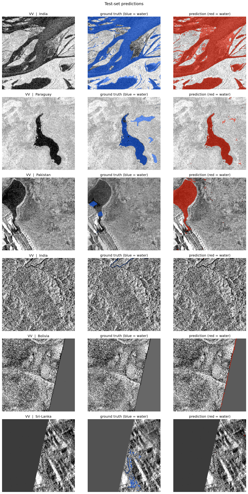

Sentinel-1 SAR flood-extent pipeline.
A deep-learning segmentation pipeline that maps flood extent from radar imagery. Trained on Sen1Floods11, validated on Hurricane Harvey over Houston.
A U-Net with a ResNet-34 encoder reads Sentinel-1 SAR imagery (VV and VH at 10 m) and outputs binary flood-extent masks. Radar sees through cloud and works at night, so it's the data source you can actually use during an active disaster, when storm cover blocks the optical satellites.

all-hand test split · water class
Houston · flood-only
Both numbers matter. The benchmark number says the model generalizes across the eleven Sen1Floods11 test regions. The Harvey number is what happens when you point it at a real US hurricane it never trained on. The gap between them is real, and it's explained: most of the Copernicus reference is flooded vegetation and flooded urban land, which stays bright in radar, and the model only finds water by its dark backscatter. Open-water flood is the part SAR does well. Urban flood from C-band radar alone is not, and the number says so. Honest reporting beats a curated number.
